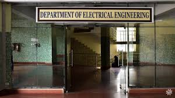

Electrical Engineering Department
Department Information
Through its long existence since 1955, Electrical Engineering Department of Walchand College of Engineering, Sangli has earned a great reputation and has become well known not only in our country, but also in the world through his alumni spread across the length and breadth of the globe. The Department was the second to be established in 1955 after Civil Engineering in 1947. Consequent to inception of the department, PG courses in two specializations, namely, Power System Engineering and Control System Engineering were started in the year 1971.
Department Images



Contact Details
DirectorHead of Civil Department